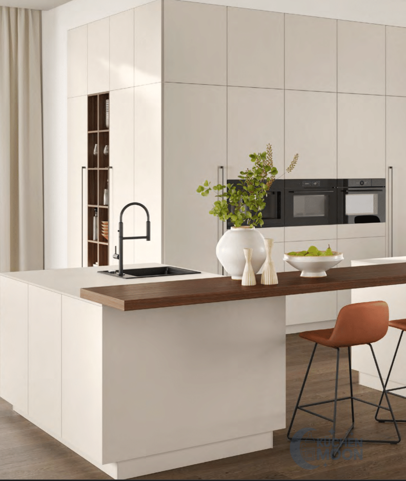
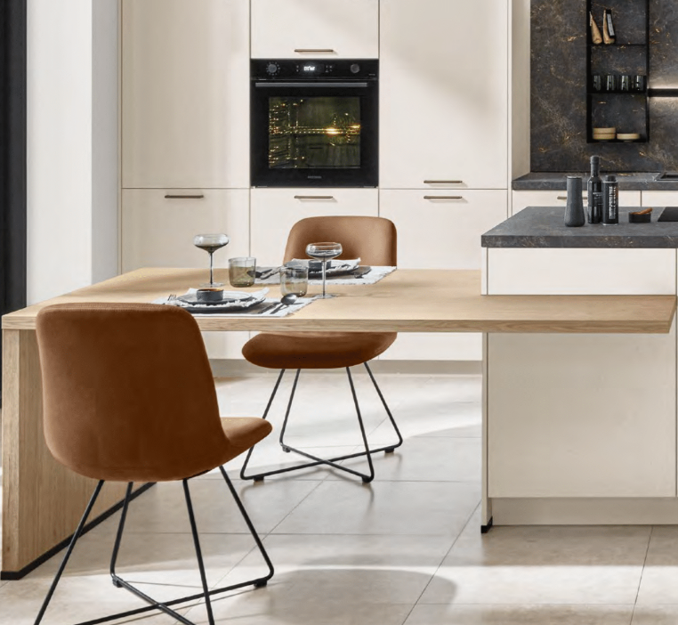
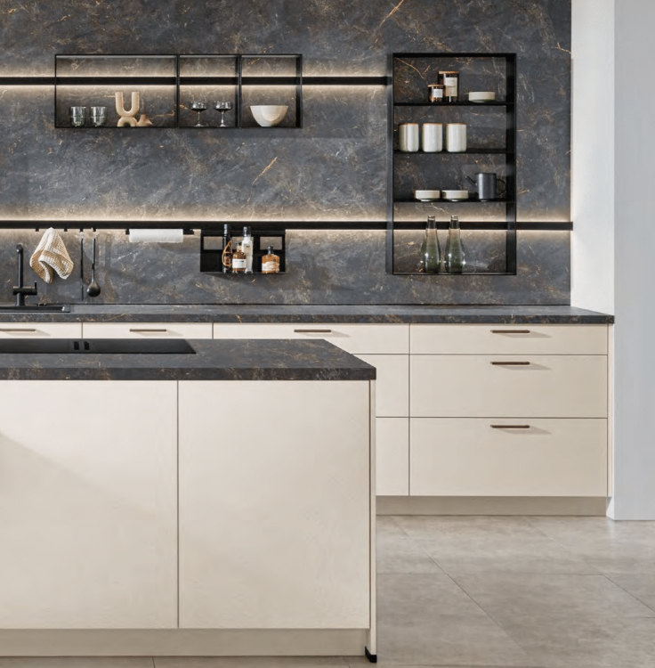

Invitación
Una noche para abrir nuevas ideas
Nos encantará contar contigo en la inauguración de Küchen Moon, un nuevo espacio dedicado al diseño, la inspiración y las cocinas que transforman hogares.
Ven a brindar con nosotros y descubre nuestro showroom en una noche especial.
Viernes
10 Julio · 2026Showroom
Cocinas para imaginar el próximo hogar



Detalles del evento
Todo preparado para recibirte
Cuenta atrás
Falta poco para brindar
00
Días
00
Horas
00
Minutos
00
Segundos
La inauguración ya ha comenzado
Cómo llegar
Parque Comercial Los Olivos, Cieza
Te esperamos en el showroom de Küchen Moon para celebrar el inicio de este nuevo espacio de diseño de cocinas.
Confirmación de asistencia
Nos encantará saber que vienes
Confirma tu asistencia en el formulario del evento.
Formulario de asistencia para la inauguración de Küchen Moon el viernes 10 a las 21:00.
Confirmar asistencia